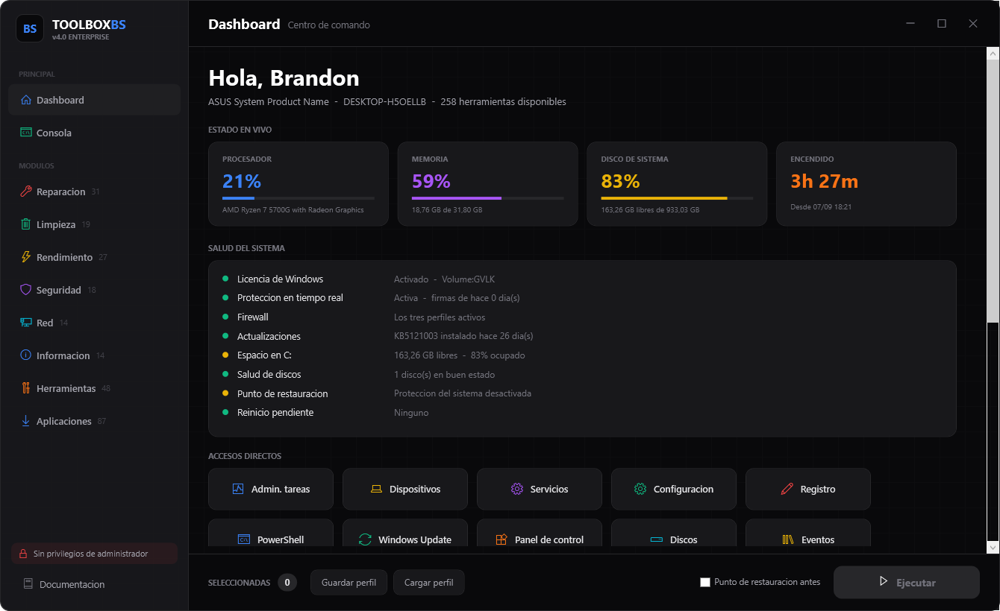
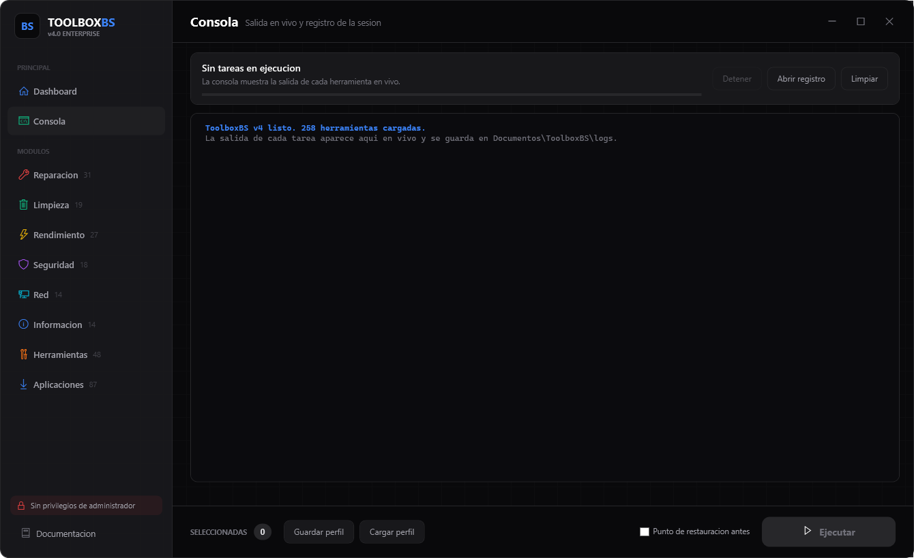
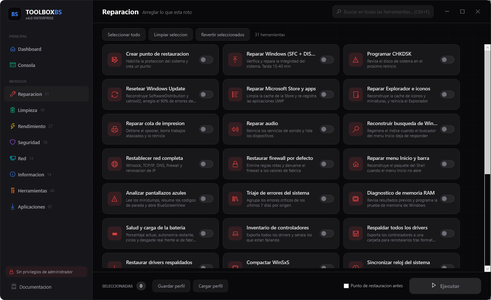
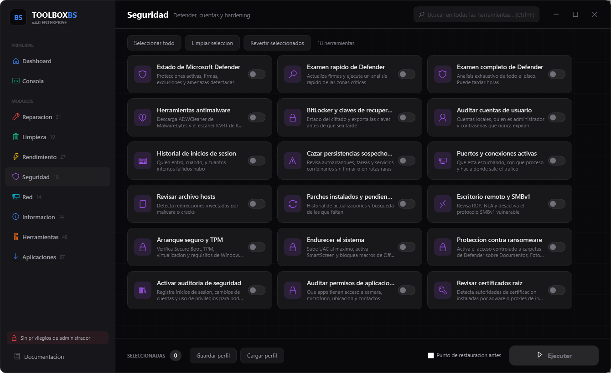

Reparar lo que está roto, recuperar espacio, afinar el rendimiento, revisar la seguridad, diagnosticar la red e instalar software. Todo en una sola aplicación, con la salida en vivo, el estado del equipo en tiempo real y la posibilidad de deshacer lo que tocaste.
Cada herramienta te dice qué va a hacer antes de hacerlo, y puedes leer su código exacto con un clic derecho. Nada corre a tus espaldas.
Arreglar lo que está roto sin formatear.
Recuperar espacio sin tocar tus archivos.
Ajustes que de verdad se notan.
Defender, cuentas y persistencias.
Cuando "no hay internet".
Reportes que puedes entregar.
Consolas nativas y utilidades de técnico.
Todo lo que toca instalar tras formatear.
Aplicación nativa en WPF. Sin navegador embebido, sin Electron, sin instalador: un solo archivo que se auto-eleva y arranca.
CPU, memoria, disco, tiempo encendido y batería actualizándose mientras trabajas. Debajo, ocho comprobaciones de salud: activación de Windows, protección en tiempo real, firewall, antigüedad del último parche, espacio libre, salud SMART de los discos, punto de restauración y si hay un reinicio pendiente.

Antes cada tarea abría su propia ventana y lo que decía se perdía al cerrarla.
Ahora la salida llega en vivo a la aplicación, coloreada por tipo de línea, y queda
guardada en un registro por sesión en Documentos\ToolboxBS\logs.

Ctrl+F busca en todo el catálogo sin importar el módulo en el que estés. Marcas lo que necesitas, el contador te dice cuántas llevas y el botón Ejecutar las corre en orden. Si siempre haces lo mismo, guarda la selección como perfil y cárgala en el siguiente equipo.

Todo lo que escribe en el registro hace una copia con reg export
antes de tocar nada, y 25 herramientas traen su propia acción de reversión.
Las 13 acciones difíciles de deshacer piden confirmación mostrando la lista exacta.

Marcan sus herramientas y te muestran la selección. El último clic siempre es tuyo: ninguna rutina ejecuta nada sola.
La misma lógica corre desde consola, así que puedes meterla en tus propios scripts o programarla. Cada herramienta tiene un identificador estable.
Descargas contadas por GitHub sobre los archivos de cada versión publicada.
La experiencia completa: consola integrada, estado en vivo y reversión. Abre PowerShell como Administrador y pega esto:
irm "https://cutt.ly/ToolboxBS" | iexDescargar el .ps1
No necesita permisos ni descargar nada primero: marcas lo que quieres, la página
arma un .bat en tu navegador y tú lo ejecutas.
Todo se genera en tu equipo, sin enviar datos a ningún servidor.
El código está publicado y puedes leerlo entero antes de ejecutarlo. Dentro de la app, clic derecho en cualquier tarjeta muestra el PowerShell exacto que va a correr.
Ver en GitHub¿Por qué pide permisos de Administrador? Casi todo lo que hace —reparar componentes de Windows, tocar servicios, limpiar carpetas del sistema, leer el estado de Defender— los necesita. A cambio, todo queda registrado en disco y puedes leer cada línea antes de ejecutarla. Ver la documentación completa →
Increíble. ToolboxBS reunió todas las herramientas que usaba por separado en un solo lugar. Mi flujo de trabajo de soporte IT cambió completamente.
La función de instalación por PowerShell es una genialidad. Es seguro, rápido y el reporte automático que deja para los clientes es perfecto.
El debloater de Windows funciona de maravilla. Eliminé toda la basura preinstalada en minutos. Lo uso en cada formateo que hago.